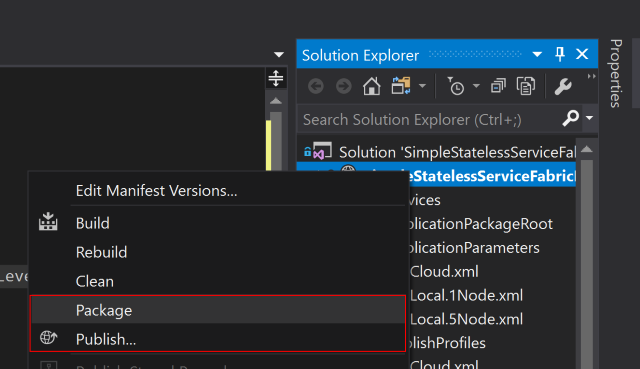
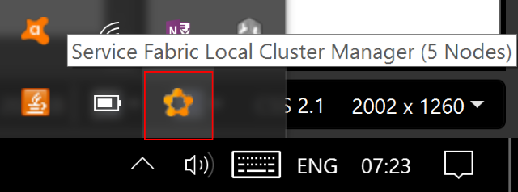

In this article we will walk through using the Azure "Service Fabric". to my mind this is one of the most fascinating things in the Azure platform offerings.
We will also see how to use best practices such as dependency injection and proper logging, and how to keep sensitive data safe when deploying to what is essentially a public cloud.
So before we get into the guts of what this article does and how it does it. Just what is the "Service Fabric"?
To quote the official docs (they always say things quite nicely, little point in trying to rewite what is already a good explanation)
Azure Service Fabric is a distributed systems platform that makes it easy to package, deploy, and manage scalable and reliable microservices and containers. Service Fabric also addresses the significant challenges in developing and managing cloud native applications. Developers and administrators can avoid complex infrastructure problems and focus on implementing mission-critical, demanding workloads that are scalable, reliable, and manageable. Service Fabric represents the next-generation platform for building and managing these enterprise-class, tier-1, cloud-scale applications running in containers.
This short video introduces Service Fabric and microservices:
ervice Fabric enables you to build and manage scalable and reliable applications composed of microservices that run at high density on a shared pool of machines, which is referred to as a cluster. It provides a sophisticated, lightweight runtime to build distributed, scalable, stateless, and stateful microservices running in containers. It also provides comprehensive application management capabilities to provision, deploy, monitor, upgrade/patch, and delete deployed applications including containerized services.
Service Fabric powers many Microsoft services today, including Azure
SQL Database, Azure Cosmos DB, Cortana, Microsoft Power BI, Microsoft Intune,
Azure Event Hubs, Azure IoT Hub, Dynamics 365, Skype for Business, and many core
Azure services.
Service Fabric is tailored to create cloud native services that can
start small, as needed, and grow to massive scale with hundreds or thousands of
machines.
Today's Internet-scale services are built of microservices. Examples
of microservices include protocol gateways, user profiles, shopping carts,
inventory processing, queues, and caches. Service Fabric is a microservices
platform that gives every microservice (or container) a unique name that can be
either stateless or stateful.
Service Fabric provides comprehensive runtime and lifecycle
management capabilities to applications that are composed of these
microservices. It hosts microservices inside containers that are deployed and
activated across the Service Fabric cluster.
A move from virtual machines to containers makes possible an
order-of-magnitude increase in density. Similarly, another order of magnitude in
density becomes possible when you move from containers to microservices in these
containers. For example, a single cluster for Azure SQL Database comprises
hundreds of machines running tens of thousands of containers that host a total
of hundreds of thousands of databases. Each database is a Service Fabric
stateful microservice.
For more on the microservices approach, read Why a
microservices approach to building applications?
Service Fabric runs everywhere. You can create clusters for Service Fabric in many environments, including Azure or on premises, on Windows Server, or on Linux. You can even create clusters on other public clouds. In addition, the development environment in the SDK is identical to the production environment, with no emulators involved. In other words, what runs on your local development cluster deploys to the clusters in other environments.
Taken from https://docs.microsoft.com/en-us/azure/service-fabric/service-fabric-overview up on date 27/11/17
So the above is what the official Microsoft docs say, but what do I think?
Well yes its does all of the above, but what drove me to look and use the Service Fabric initially (A decision I have not regretted) is that is also offers these features
FabricClient .NET
object to communicate with the cluster
I have the code in my Github repo : https://github.com/sachabarber/MinimalAzureServiceFabricIOCSerilog
You will need to have the following components installed to run the code associated with this article
This article will hopefully give you a taster of what is possible with the Azure Service Fabric, and will also show you how to perform common best practices such as:
To run the Service Fabric you MUST ensure that it runs with x64 as the platform. An example is shown below for the code that accompanies this article
CLICK FOR BIGGER IMAGE
The Service Fabric builds apon previous Azure successes, and Publish profiles are one such success. These are a simple idea, where we have a profile matched with a deployment that specifies the requirments needed for THAT deployments via some dedicated config.
Here is an example of publish profile file
<?xml version="1.0" encoding="utf-8"?>
<PublishProfile xmlns="http://schemas.microsoft.com/2015/05/fabrictools">
<ClusterConnectionParameters ConnectionEndpoint="XXXXXXXX.westus.cloudapp.azure.com:19000" />
<ApplicationParameterFile Path="..\ApplicationParameters\Cloud.xml" />
<CopyPackageParameters CompressPackage="true" />
</PublishProfile>
Where this just points to the relevant cluster endpoint, and specifies another file for the parameters to use
Here is that extra parameters file
<?xml version="1.0" encoding="utf-8"?>
<Application xmlns:xsd="http://www.w3.org/2001/XMLSchema"
xmlns:xsi="http://www.w3.org/2001/XMLSchema-instance"
Name="fabric:/SimpleStatelessServiceFabricDemo"
xmlns="http://schemas.microsoft.com/2011/01/fabric">
<Parameters>
<Parameter Name="Stateless1_InstanceCount" Value="-1" />
<Parameter Name="simpleStatelessServiceFabricDemo:EnvironmentName"
Value="Cloud" />
<Parameter Name="simpleStatelessServiceFabricDemo:serilog:write-to:Seq.restrictedToMinimumLevel"
Value="Information" />
<Parameter Name="simpleStatelessServiceFabricDemo:serilog:write-to:Seq.serverUrl"
Value="http://localhost:5341" />
<Parameter Name="simpleStatelessServiceFabricDemo:UseServiceFabricEnhancements"
Value="true" />
<Parameter Name="simpleStatelessServiceFabricDemo:SomeSafeKey"
Value="fdfdfdd" />
<Parameter Name="simpleStatelessServiceFabricDemo:CertThumbPrint"
Value="ad0665f13101c6258cbfae6e091c3f3155fe50d0" />
</Parameters>
</Application>
So we would normally have 1 x Publish Profile file, and 1 x Parameter file per environment that we wish to release to. The standard template that comes with Visual Studio for building Azure Service Fabric apps will allow you to specify which publish profile to release when you want to publish.
NOTE :
You must perform a "Package" step first before you "Publish", this creates the correct structure to release. This is avaiable via a right click in the main project (the one with the "ApplicationManifest.xml in it)

As I stated in the introductory section of this article the Azure Service Fabric comes with a rather nice cluster manager (which I have to say looks like it stole a lot of inspiration from the DataStax Cassandra cluster manager). This cluster manager is accessible from the portal or via the system tray icon if you are running the cluster locally from Visual Studio.
From the cluster manager you can do these sort of things
As I say if running locally you can acess this from the system tray icon, otherwise just grab the url from the Azure portal

Right click that icon, and choose "Manage local cluster" to see the Fabric explorer. This is available at a url of this form (get the correct url from your own setup or the Azure portal)
http://[YOUR HOST HERE]:19080/Explorer/Index.htm
CLICK FOR BIGGER IMAGE
We are using the Azure Service Fabric a fair bit, and it has not let us down so far. We mainly use it for siloed micro services that don't interact with each other that much, so we have not really needed to open any ports. However the scaling aspect of it, and the fact that this can be done via C# FabricClient and PowerShell on demand should we need to scal further is very sweet